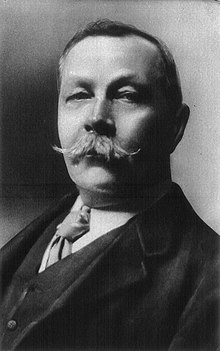

|  | Sir Arthur Conan DoyleSir Arthur Ignatius Conan Doyle (22 May 1859 – 7 July 1930) was a British writer and physician. Doyle was a prolific writer; other than Holmes stories, his works include fantasy and science fiction stories about Professor Challenger and humorous stories about the Napoleonic soldier Brigadier Gerard, as well as plays, romances, poetry, non-fiction, and historical novels. One of Doyle's early short stories, "J. Habakuk Jephson's Statement" (1884), helped to popularise the mystery of the Mary Celeste. |
Doyle struggled to find a publisher. His first work featuring Sherlock Holmes and Dr. Watson, A Study in Scarlet, was written in three weeks when he was 27 and was accepted for publication by Ward Lock & Co on 20 November 1886, which gave Doyle £25 (equivalent to £2,900 in 2019) in exchange for all rights to the story. The piece appeared a year later in the Beeton's Christmas Annual and received good reviews in The Scotsman and the Glasgow Herald.
Holmes was partially modelled on Doyle's former university teacher Joseph Bell. In 1892, in a letter to Bell, Doyle wrote, "It is most certainly to you that I owe Sherlock Holmes ... round the centre of deduction and inference and observation which I have heard you inculcate I have tried to build up a man",[36] and in his 1924 autobiography, he remarked, "It is no wonder that after the study of such a character [viz., Bell] I used and amplified his methods when in later life I tried to build up a scientific detective who solved cases on his own merits and not through the folly of the criminal."[37] Robert Louis Stevenson was able to recognise the strong similarity between Joseph Bell and Sherlock Holmes: "My compliments on your very ingenious and very interesting adventures of Sherlock Holmes. ... can this be my old friend Joe Bell?"[38] Other authors sometimes suggest additional influences—for instance, Edgar Allan Poe's character C. Auguste Dupin, who is mentioned, disparagingly, by Holmes in A Study in Scarlet.[39] Dr. (John) Watson owes his surname, but not any other obvious characteristic, to a Portsmouth medical colleague of Doyle's, Dr. James Watson.
A sequel to A Study in Scarlet was commissioned, and The Sign of the Four appeared in Lippincott's Magazine in February 1890, under agreement with the Ward Lock company. Doyle felt grievously exploited by Ward Lock as an author new to the publishing world, and so, after this, he left them.[9] Short stories featuring Sherlock Holmes were published in the Strand Magazine. Doyle wrote the first five Holmes short stories from his office at 2 Upper Wimpole Street (then known as Devonshire Place), which is now marked by a memorial plaque.
Doyle's attitude towards his most famous creation was ambivalent.[40] In November 1891, he wrote to his mother: "I think of slaying Holmes, ... and winding him up for good and all. He takes my mind from better things." His mother responded, "You won't! You can't! You mustn't!"[42] In an attempt to deflect publishers' demands for more Holmes stories, he raised his price to a level intended to discourage them, but found they were willing to pay even the large sums he asked.[40] As a result, he became one of the best-paid authors of his time.
In December 1893, to dedicate more of his time to his historical novels, Doyle had Holmes and Professor Moriarty plunge to their deaths together down the Reichenbach Falls in the story "The Final Problem". Public outcry, however, led him to feature Holmes in 1901 in the novel The Hound of the Baskervilles. Holmes's fictional connection with the Reichenbach Falls is celebrated in the nearby town of Meiringen.
In 1903, Doyle published his first Holmes short story in ten years, "The Adventure of the Empty House", in which it was explained that only Moriarty had fallen, but since Holmes had other dangerous enemies—especially Colonel Sebastian Moran—he had arranged to make it look as if he too were dead. Holmes was ultimately featured in a total of 56 short stories—the last published in 1927—and four novels by Doyle, and has since appeared in many novels and stories by other authors.